Maquinado por Control Numérico (CNC) y Software CAM
1. Simulación y Verificación en NC Viewer
Para verificar que un programa en Código G no presente colisiones o errores de trayectoria antes de enviarlo a una máquina física, utilizamos la plataforma web NC Viewer. Esta herramienta permite visualizar en 3D el recorrido exacto que realizará la herramienta de corte
¿Cómo funciona la plataforma?
- Panel Editor (Izquierda): Espacio donde se escribe, edita o pega el código G (
G00,G01,M3, etc.) - Visor 3D (Centro/Derecha): Renderiza en tiempo real los trazos del código. Las líneas muestran los movimientos de corte y posicionamiento en los ejes X, Y y Z
- Botón PLOT (Verde): Procesa el código ingresado y actualiza la simulación visual en la pantalla
- Controles de Reproducción: Permiten ejecutar el código paso a paso o en animación continua para observar el orden de corte
- Ajustes e Iconos: Permiten cambiar entre milímetros/pulgadas y resetear la vista de la máquina
Sistema de Coordenadas
NC Viewer trabaja sobre un sistema Cartesiano XYZ: * Ejes X e Y: Definen el plano horizontal donde se dibuja el perfil o contorno * Eje Z: Representa la profundidad. Un valor positivo (Z > 0) indica que la herramienta está arriba en zona segura, mientras que un valor negativo (Z < 0) representa la profundidad de penetración dentro del material
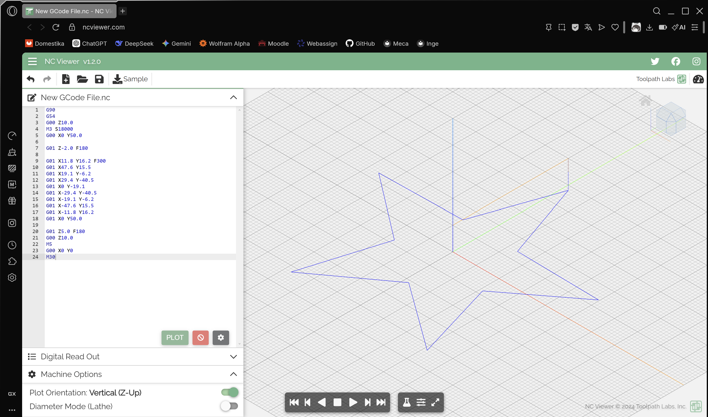
2. Generación de Trayectorias con VCarve Pro
Programar coordenadas manualmente a código G puede ser complejo. Por ello, utilizamos VCarve Pro, un software de manufactura asistida por computadora (CAM) mucho más ágil e intuitivo, ya que se trabaja de manera visual sin necesidad de escribir código línea por línea
Ventajas y Flujo de Trabajo
- Diseño e Importación: Permite diseñar directamente en la plataforma o importar archivos vectoriales 2D/3D (como
.DXFo.SVG) - Configuración del Material (Stock): Se definen las medidas exactas de la pieza (ancho, largo, grosor) y la posición del origen
- Estrategias de Maquinado Principales:
- Perfilado (Profile): Se utiliza para cortar a través del contorno del material (por dentro, por fuera o sobre la línea). Se usa para separar o recortar la pieza
- Cajeado (Pocket): Se emplea para vaciar o remover material a una profundidad determinada sin perforar toda la pieza, creando cavidades, cajeras o bajorrelieves
- Exportación: El programa procesa las trayectorias y genera el archivo de código G. Este archivo se guarda como un documento de texto plano (que contiene las instrucciones que entiende la máquina) para transferirse vía USB
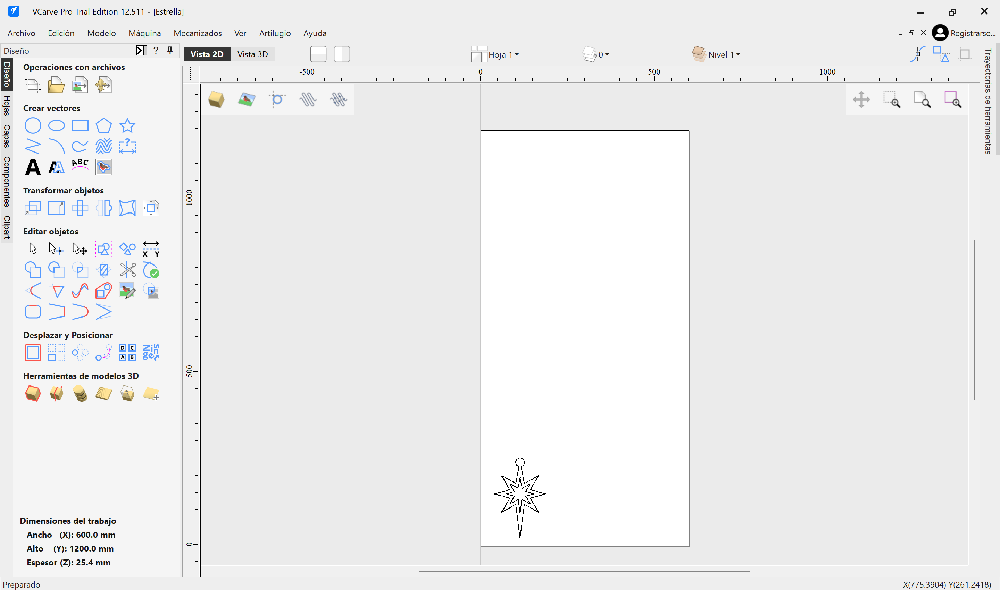
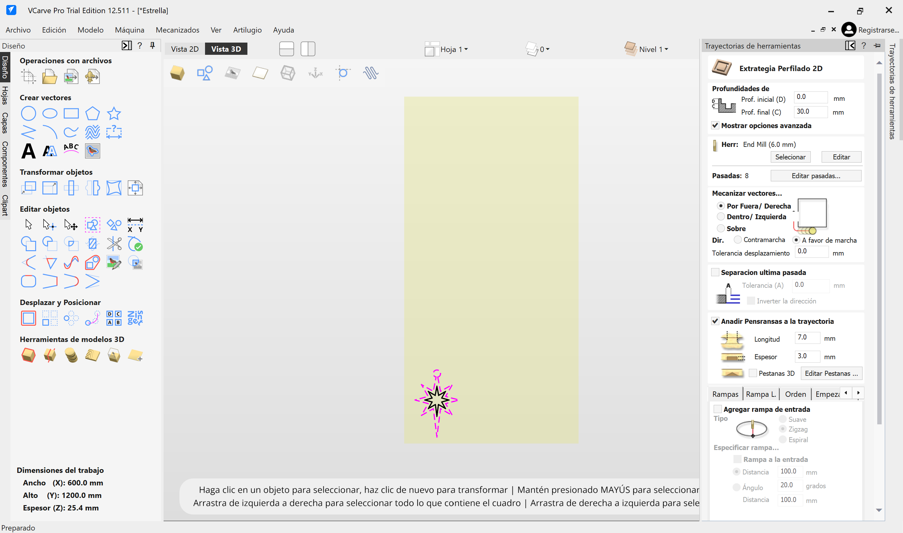
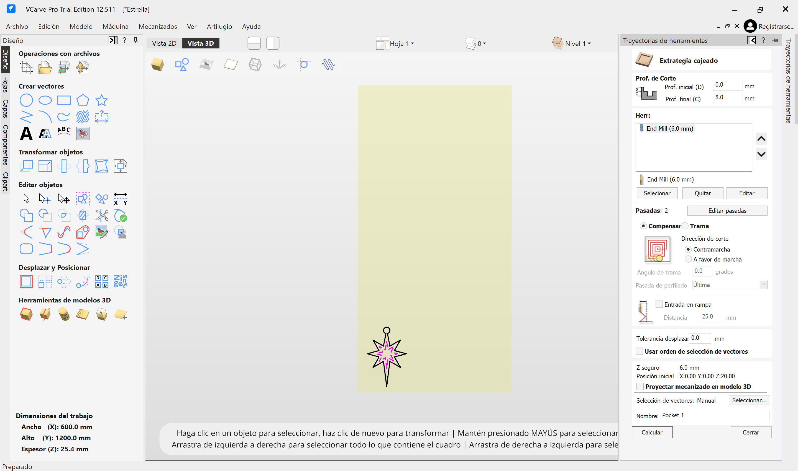
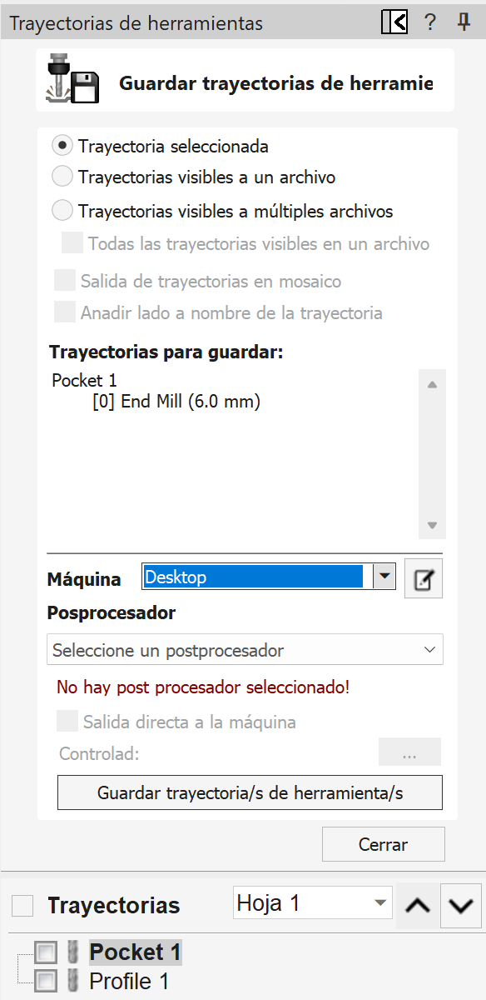
3. Operación en Máquina CNC Negra
Esta máquina es un equipo industrial de mayor escala. Cuenta con un sistema de control independiente (control pendant) e infraestructura para la sujeción de materiales rígidos
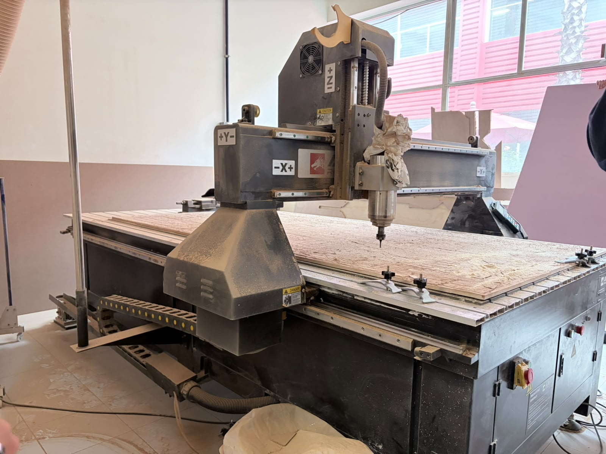
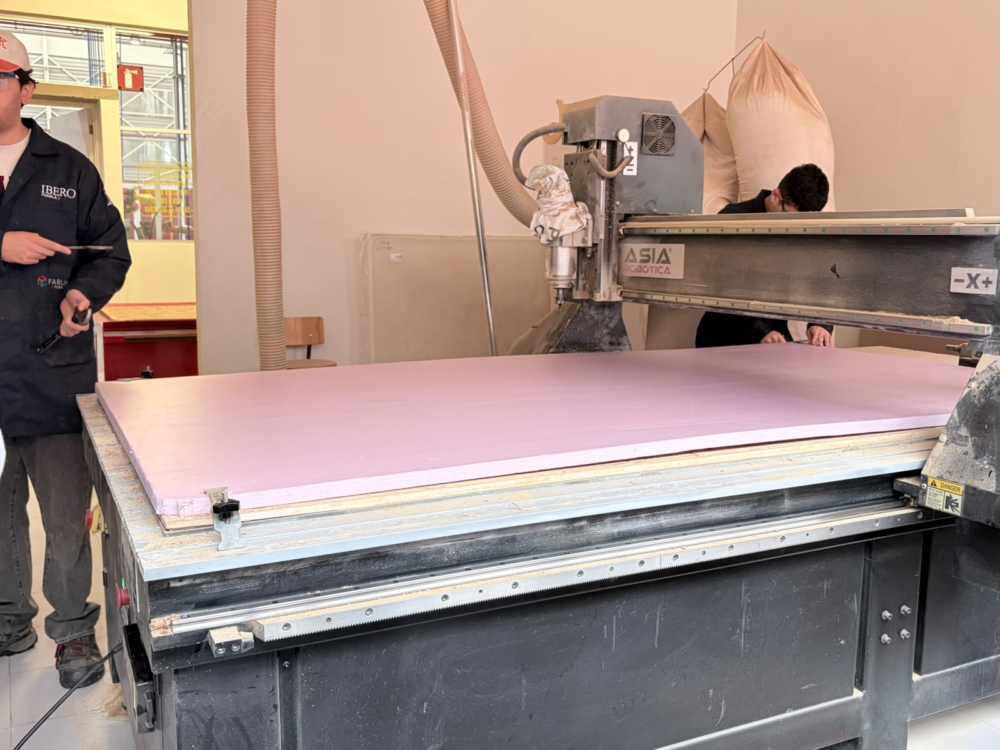
Componentes de Sujeción y Herramienta
- Collets (Boquillas) y Fresas: La herramienta de corte (fresa/broca) se sujeta al husillo mediante una boquilla (collet) del diámetro adecuado. Se afloja la tuerca con llaves especiales, se coloca la fresa y se aprieta firmemente
- Sistemas de Sujeción: Esta máquina utiliza prensas o "patitas" metálicas ajustables que presionan el material contra la placa de madera de la mesa para evitar que se mueva durante el corte
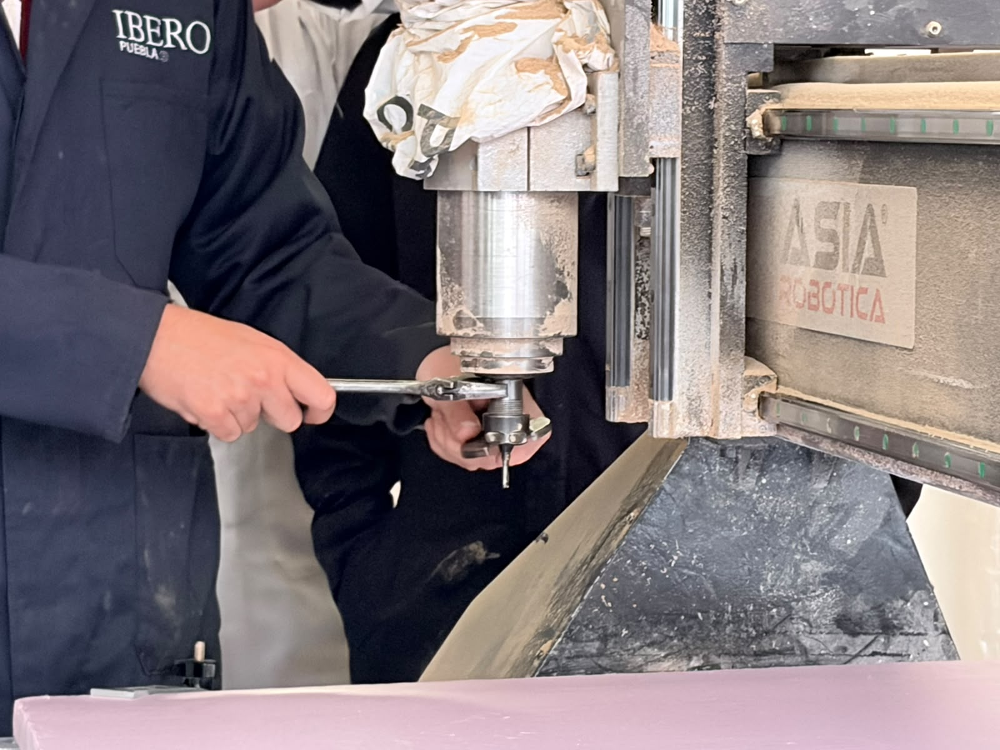
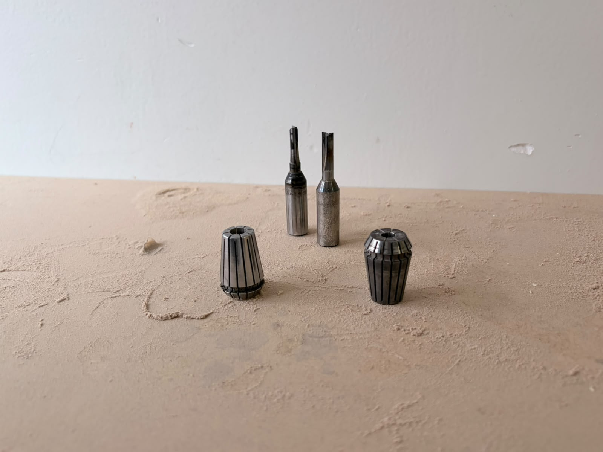
Procedimiento de Operación
- Encendido: Se activa la máquina desde el botón principal de encendido
- Carga de Archivo: Se conecta la memoria USB al control manual de la máquina, se navega por el menú, se busca el archivo de texto generado en VCarve y se selecciona
- Calibración de Origen (
G54): Con los botones del control, se mueven los ejes X, Y y Z. Se posiciona la fresa sobre la esquina de inicio del material y se baja el eje Z hasta rozar la superficie superior para establecer el Cero Pieza - Ejecución: Se confirma el programa desde el control y se da inicio al ciclo de maquinado
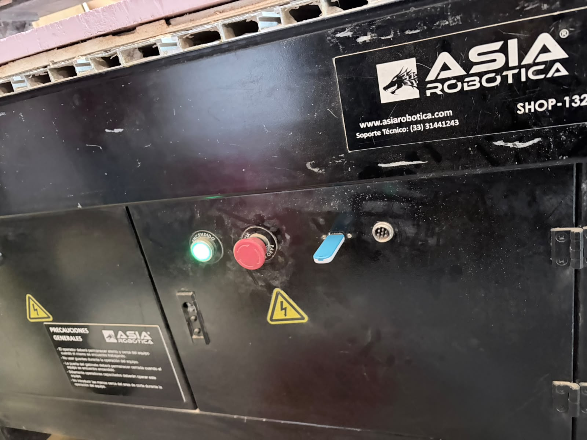
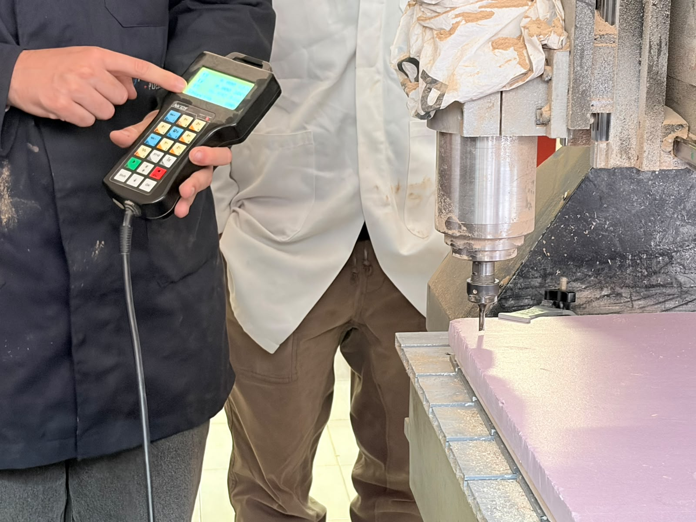
4. Operación en Máquina CNC Roja (Práctica)
Para la realización de la práctica utilizamos la Máquina CNC Roja. Esta máquina es mucho más práctica, intuitiva y fácil de entender, ya que se controla directamente mediante una computadora conectada al equipo
Fijación del Material
En esta práctica trabajamos con unicel rosa (extruido). A diferencia de la máquina negra que usa prensas metálicas, en la máquina roja el tipo de fijación depende del material: * Materiales blandos (Unicel rosa): Se deben fijar o pegar a la cama usando cinta de doble cara de alta adherencia. * Materiales duros (Madera/MDF): Se deben clavar o atornillar a la base
Procedimiento de Operación en Software de Control
- Encendido y Conexión: Se enciende la máquina CNC roja y se conecta el cable USB a la computadora del equipo
- Cargar el Programa: En el software de control de la computadora, se presiona el botón de abrir/buscar archivo y se selecciona el documento de texto guardado desde VCarve Pro
- Establecer el Origen (X, Y, Z):
- Utilizando las flechas y controles en pantalla de la interfaz, se desplaza el cabezal en X e Y hasta el punto inicial deseado sobre el unicel
- Se ajusta suavemente la altura del eje Z hasta que la fresa quede al nivel de la cara superior del unicel
- Se presionan los botones de Cero X, Cero Y y Cero Z en la pantalla para poner las coordenadas a cero y fijar el origen
- Desbloqueo de Seguridad: Antes de iniciar, es obligatorio presionar/desactivar el botón de Paro de Emergencia en la interfaz para habilitar la comunicación con los motores
- Ejecución del Corte: En el panel derecho de la interfaz se encuentran las funciones principales: Correr (Start), Pausar y Parar. Se presiona Correr para que la máquina ejecute automáticamente todo el proceso de corte
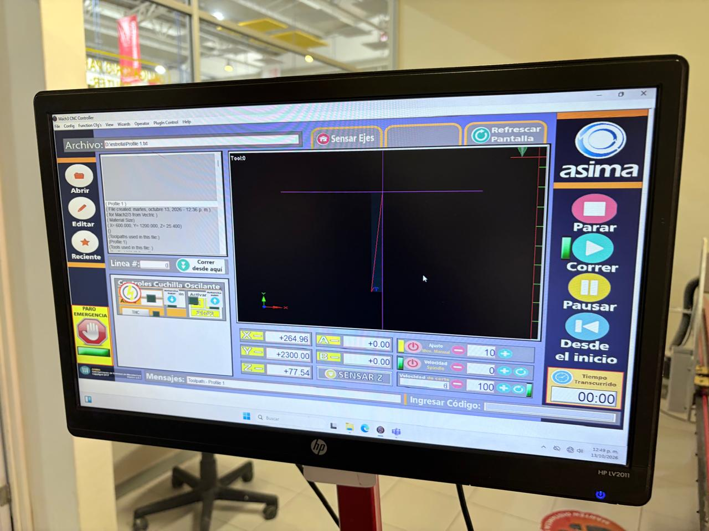
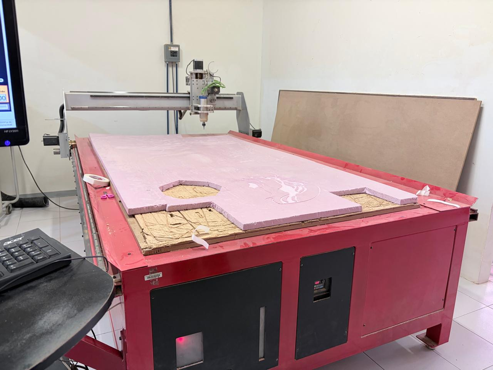
Maquinado en la CNC Roja
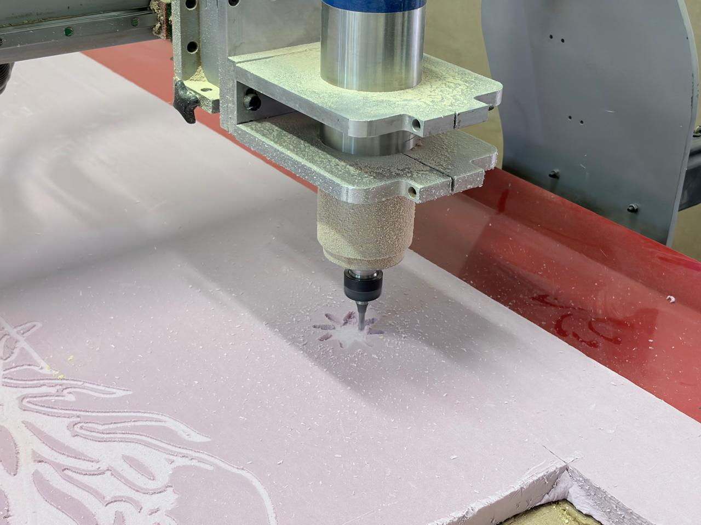
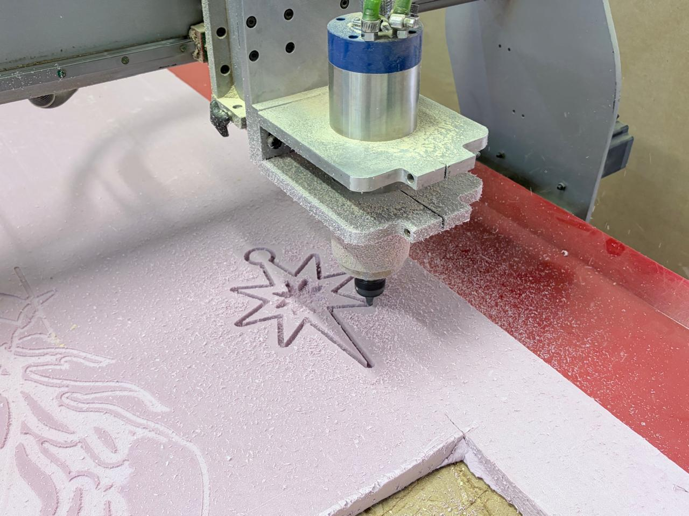
Pieza Finalizada
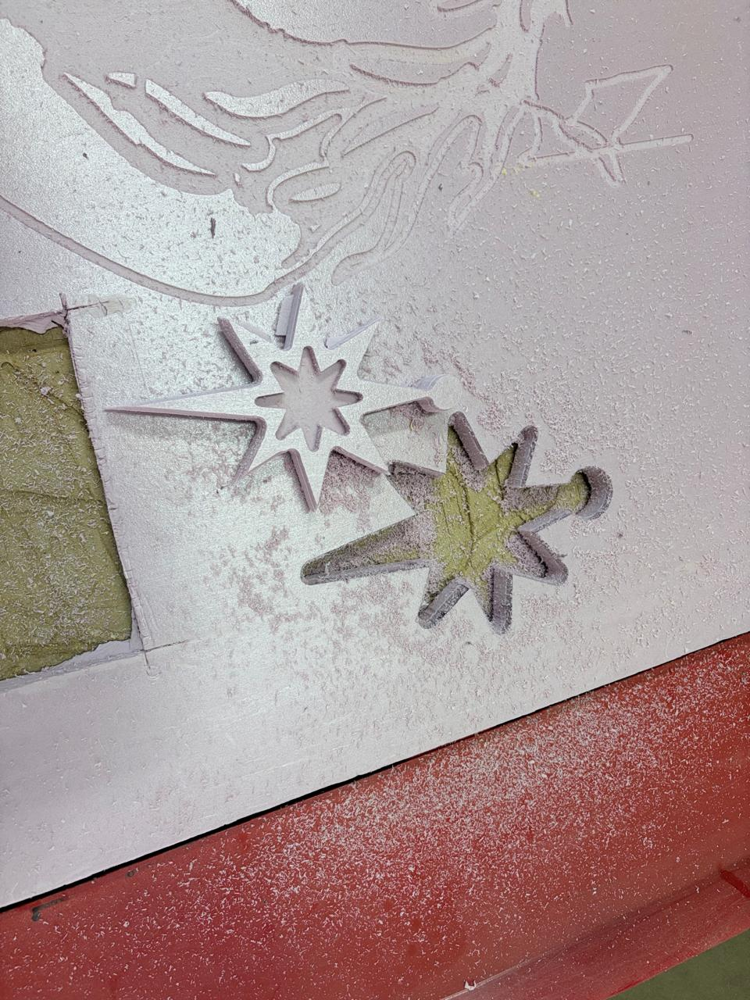
5. Descarga de Archivos del Proyecto
A continuación se proporcionan los enlaces para descargar los archivos de diseño, proyecto y código G utilizados en esta práctica de maquinado CNC: